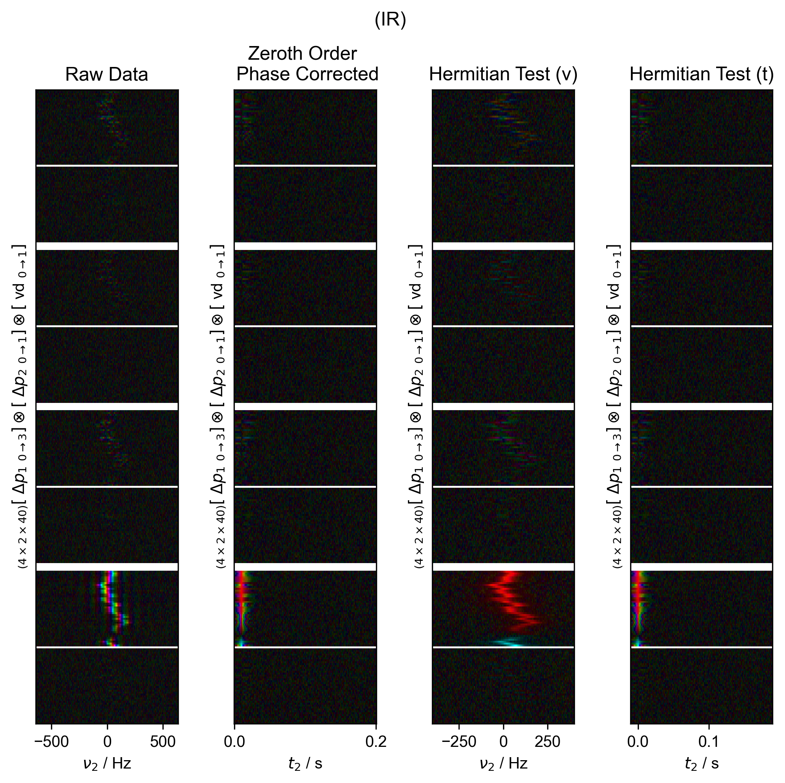
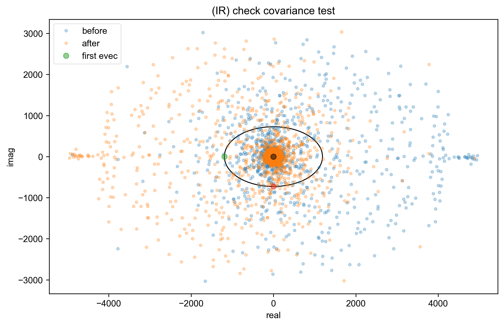
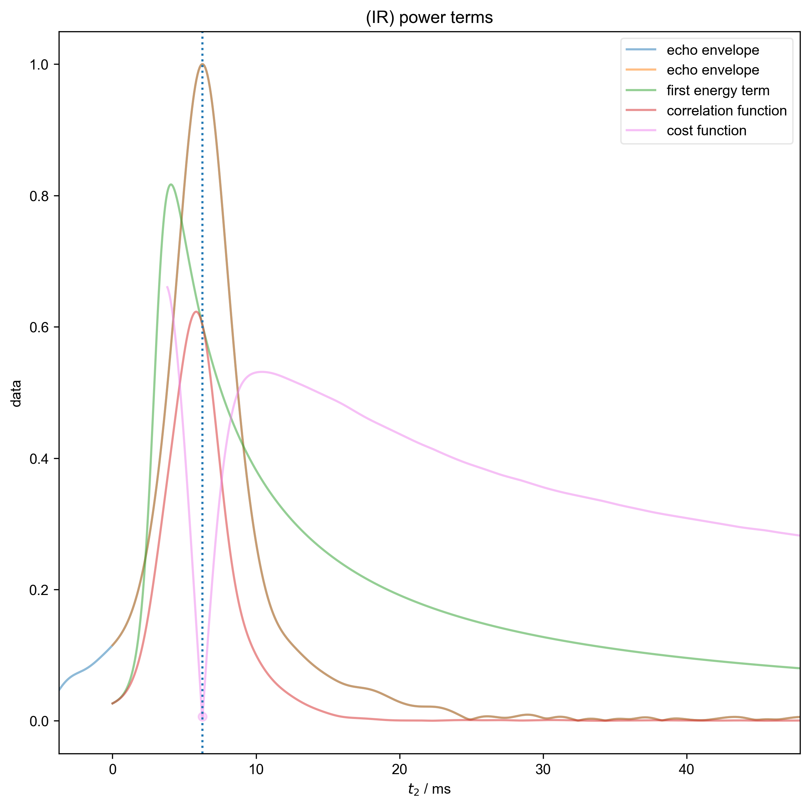
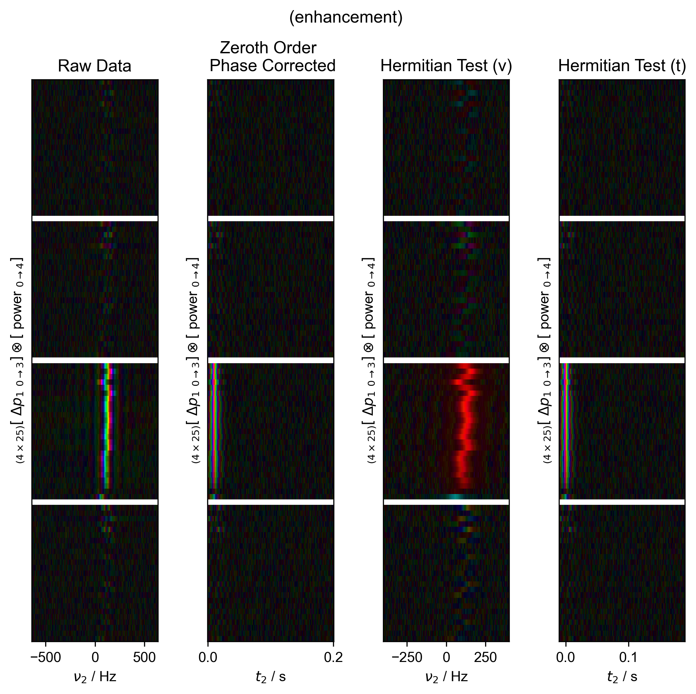

Note
Go to the end to download the full example code
Phasing and Timing Correction With Fake Data¶
Take fake data with a relatively symmetric echo (\(T_2^*=1/50\pi\), echo time of 10 ms), and demonstrate how we can automatically find the zeroth order phase and the center of the echo in order to get data that’s purely real in the frequency domain.
- 
- 
- 
- 
---------- logging output to /home/jmfranck/pyspecdata.0.log ----------
1: (IR) Data processing |||('Hz', None)
2: (IR) check covariance test
3: (IR) power terms |||ms
4: (enhancement) Data processing |||('Hz', None)
5: (enhancement) check covariance test
6: (enhancement) power terms |||ms
from pyspecdata import *
from pyspecProcScripts import *
from pylab import *
import sympy as s
from collections import OrderedDict
from numpy.random import normal, seed
init_logging(level="debug")
seed(2021)
rcParams["image.aspect"] = "auto" # needed for sphinx gallery
# sphinx_gallery_thumbnail_number = 1
t2, td, vd, power, ph1, ph2 = s.symbols("t2 td vd power ph1 ph2")
echo_time = 10e-3
f_range = (-400, 400)
with figlist_var() as fl:
for expression, orderedDict, signal_pathway, indirect, label in [
(
(
23
* (1 - 2 * s.exp(-vd / 0.2))
* s.exp(+1j * 2 * s.pi * 100 * t2 - abs(t2) * 50 * s.pi)
),
[
("vd", nddata(r_[0:1:40j], "vd")),
("ph1", nddata(r_[0:4] / 4.0, "ph1")),
("ph2", nddata(r_[0, 2] / 4.0, "ph2")),
("t2", nddata(r_[0:0.2:256j] - echo_time, "t2")),
],
{"ph1": 0, "ph2": 1},
"vd",
"IR",
),
(
(
23
* (1 - (32 * power / (0.25 + power)) * 150e-6 * 659.33)
* s.exp(+1j * 2 * s.pi * 100 * t2 - abs(t2) * 50 * s.pi)
),
[
("power", nddata(r_[0:4:25j], "power")),
("ph1", nddata(r_[0:4] / 4.0, "ph1")),
("t2", nddata(r_[0:0.2:256j] - echo_time, "t2")),
],
{"ph1": 1},
"power",
"enhancement",
),
]:
fl.basename = "(%s)" % label
fig, ax_list = subplots(1, 4, figsize=(7, 7))
fig.suptitle(fl.basename)
fl.next("Data processing", fig=fig)
data = fake_data(expression, OrderedDict(orderedDict), signal_pathway)
data.reorder([indirect, "t2"], first=False)
data.ft("t2")
data /= sqrt(ndshape(data)["t2"]) * data.get_ft_prop("t2", "dt")
fl.image(data, ax=ax_list[0])
ax_list[0].set_title("Raw Data")
data = data["t2":f_range]
data.ift("t2")
data /= zeroth_order_ph(select_pathway(data, signal_pathway), fl=fl)
fl.image(data, ax=ax_list[1], human_units=False)
ax_list[1].set_title("Zeroth Order \n Phase Corrected")
fl.basename = "(%s)" % label
best_shift = hermitian_function_test(
select_pathway(data.C.mean(indirect), signal_pathway), fl=fl
)
data.setaxis("t2", lambda x: x - best_shift).register_axis({"t2": 0})
data.ft("t2")
fl.image(data, ax=ax_list[2])
ax_list[2].set_title("Hermitian Test (ν)")
data.ift("t2")
fl.image(data, ax=ax_list[3], human_units=False)
ax_list[3].set_title("Hermitian Test (t)")
fig.tight_layout(rect=[0, 0.03, 1, 0.95])
Total running time of the script: (0 minutes 7.593 seconds)